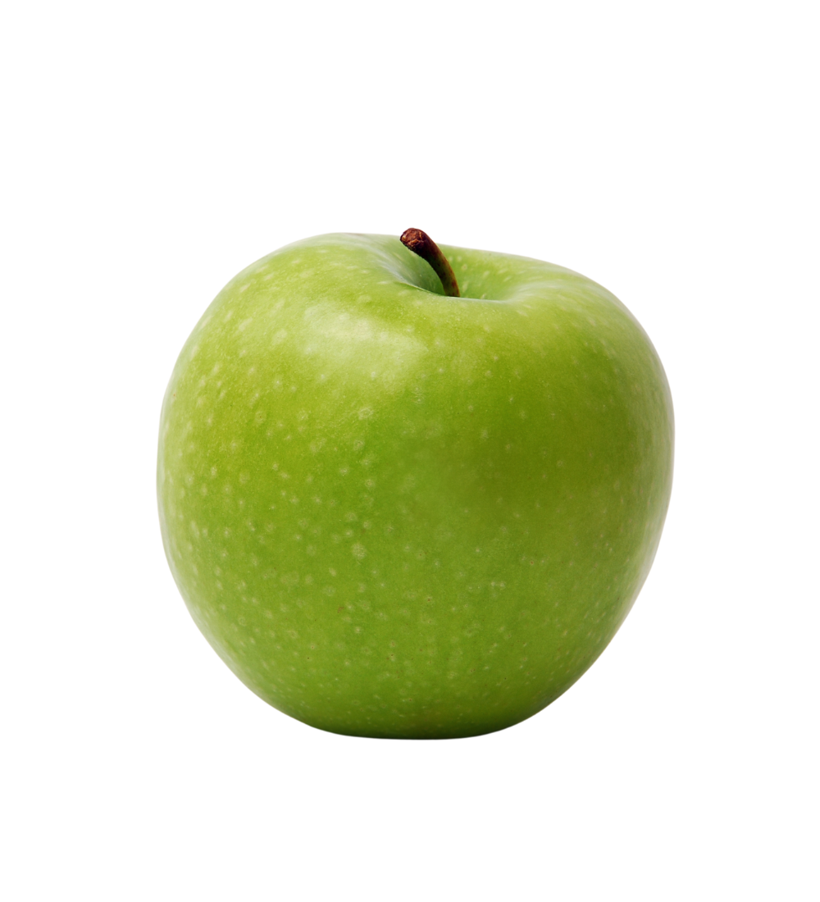

Tarte aux pommes
Dessert
60 min
Facile
4 pers.
Ajouter aux favoris
Ingrédients :
- 6 pommes (préférence Golden ou Granny Smith)
- 50g de sucre de canne
- 1 càc de cannelle en poudre
- 1 pâte brisée
Préparation :
- Préchauffer le four à 180°C thermostat 6.
- Étaler la pâte brisée dans un moule à tarte piqué à la fourchette.
- Éplucher et couper les pommes en tranches fines sur la pâte.
- Saupoudrer avec le sucre et la cannelle.
- Enfourner 35 minutes jusqu'à ce que la pâte soit dorée.
- Laisser refroidir avant de servir.
Galerie d'images

Etape 1
Etape 2
Etape 3
Etape 4
Etape 5
Etape 6